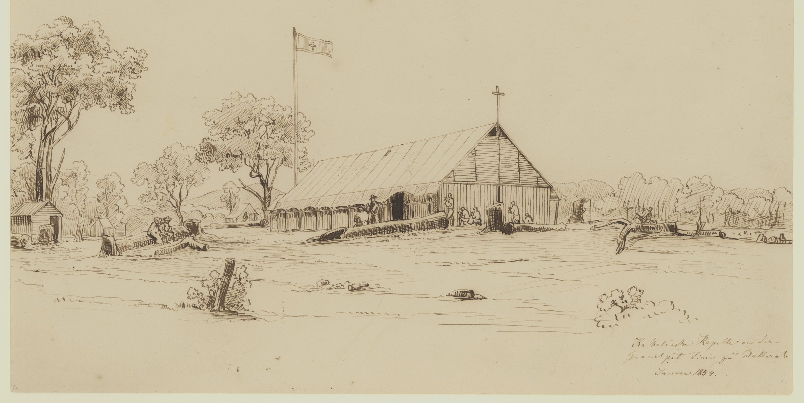

History Case File · Exhibit N
Gunfire at Dawn · The Eureka Stockade, Ballarat, 1854
Turn the pages. Tap a red mark if you want to answer Mrs Hayes.
Page 1
Mrs Hayes wrote this in the margin. Write what you think.
Nell wrote .
Mrs Hayes wrote .
